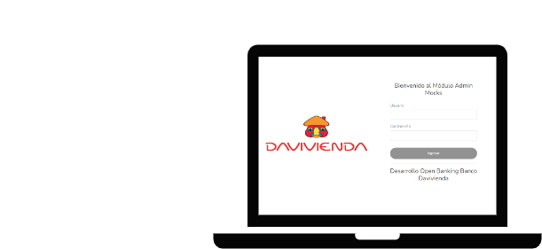

¿Qué es Sandbox?
Crear, eliminar, consultar y modificar Mocks que se generen en base a respuesta de servicios existentes.
Facilitar las pruebas de integración de los nuevos aliados a micro aplicaciones y APIs que ya se encuentran productivas.
Permite configurar servicios del banco.
Volver